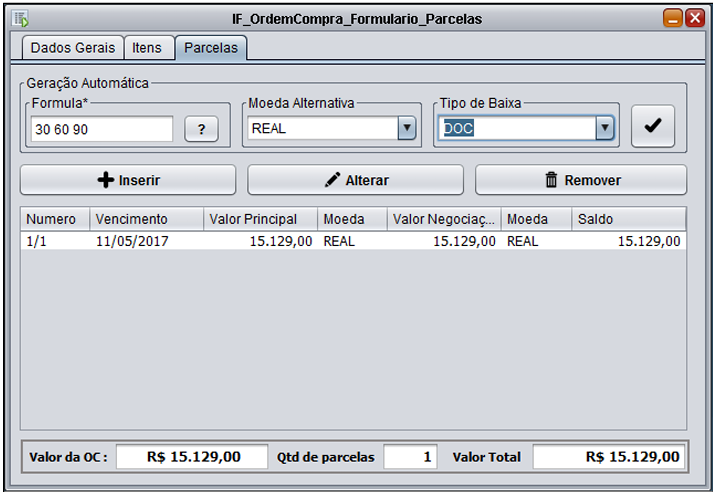
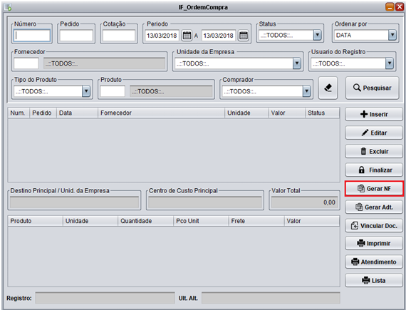
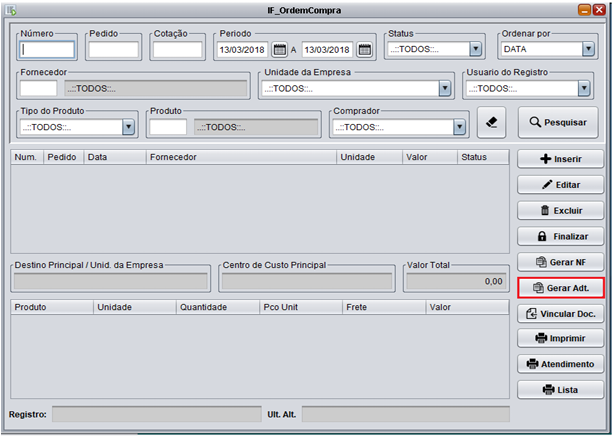
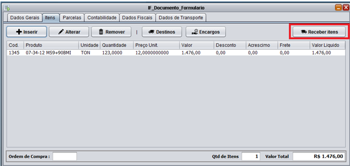
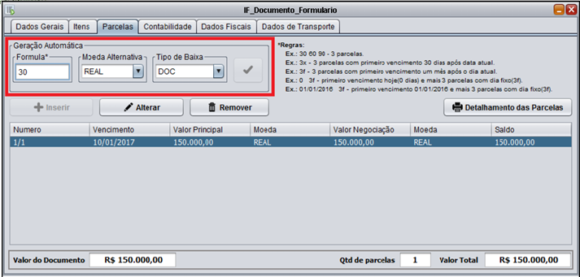

📚 Manuais
Ordem de Compra
Como cadastrar uma Ordem de Compra?
Para cadastrar uma ordem de compra, na tela "Administrativo" , "Compras" , acesse o menu "Ordem de Compra". Na tela de Ordem de Compra, clique no botão "Inserir", informe o Pedido, a unidade da empresa, centro de custo, o comprador, o fornecedor e a unidade do fornecedor, clique em Gravar. Va para aba Itens, clique em Inserir, informe o Produto e os valores, e clique em Gravar. O botão Destino é referente a fazenda, almoxarifado ou outro local ou bem a que o produto será enviado.
Va para a aba Parcelas, a duas formas de inserir uma parcela, a primeira é clicando no botão inserir e informando os dados da parcela a segunda é utilizando o modo de Geração Automática, siga o exemplo abaixo ou clique no ícone ❓ que ele irá lê mostrar as formulas das parcelas, em seguida clique em ✅. Conforme a imagem abaixo.

Para gerar NF de entrada referente a ordem de compra feita clique no botão Gerar NF conforme a imagem abaixo, e o sistema ira direcioná-lo a tela de entrada de documento.

Para gerar um adiantamento ao Fornecedor sobre a Ordem de Compra, clique no botão Gerar Adt, conforme a imagem abaixo. O sistema irá abrir a tela de Documentos com todos os dados da Ordem de Compra para que o adiantamento seja lançado.

Documentos
Como cadastrar um documento?
Para cadastrar um documento, na tela "Administrativo" , "Movimentos" , acesse o menu "Documentos". Na tela de Documentos, clique no botão "Inserir", informe os dados da Nota e clique em Gravar. Va para aba Itens, clique em Inserir, informe os dados do produto, e clique em Gravar. O sistema irá gerar uma mensagem dizendo se você gostaria de gerar contabilidade, clique em sim e o sistema ira gera-la automaticamente.
Botão Receber itens, destacado na imagem abaixo, tem função de recebimento dos itens em estoque, ele irá abrir a tela de recebimento de Estoque, clique sobre o produto, selecione a unidade de estoque e clique em gravar itens selecionados, logo após clique no botão receber itens selecionados.

Vá para aba Parcelas, clique em Inserir, informe os Dados das Parcelas e clique em Gravar. Caso queira inserir Parcelas Automaticamente Informe a Formula (o exemplo de como inserir a formula pode ser encontrado na imagem abaixo), selecione o tipo de baixa e clique no botão ✅.

Vá para aba Contabilidade, após inserir os produtos da nota o sistema irá gerar a contabilidade automaticamente se foi requerido na tela após a inserção dos produtos. Caso queira modifica-las selecione o registro na aba e clique em Alterar, após a correção clique no botão Contabilizar.